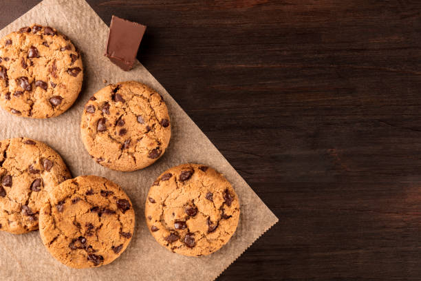

Classic Chocolate chip cookies

A delightful classic! Cookies are a simple yet delicious dessert that is packed with flavor, chewiness and love.
Now as i have previously mentioned, this websites writer has not found a lot of sucess in the world of cooking,
however, when it came to chocolate chip cookies, the writer managed to bake an edible close resemblance to the cookies.
Ingredients:
- 1 cup butter, softened
- 1 cup white sugar
- 1 cup packed brown sugar
- eggs
- 2 teaspoons vanilla extract
- 1 teaspoon baking soda
- 2 teaspoons hot water
- ½ teaspoon salt
- 3 cups all-purpose flour
- 2 cups semisweet chocolate chips
- 1 cup chopped walnuts
Once you have all of your Ingredients together, you can start assembling your cookies by following the steps below
- Preheat oven to 350 degrees F (175 degrees C).
- Cream together the butter, white sugar, and brown sugar until smooth. Beat in the eggs one at a time, then stir in the vanilla. Dissolve baking soda in hot water. Add to batter along with salt. Stir in flour, chocolate chips, and nuts. Drop by large spoonfuls onto ungreased pans.
- for about 10 minutes in the preheated oven, or until edges are nicely browned.
Return to homepage